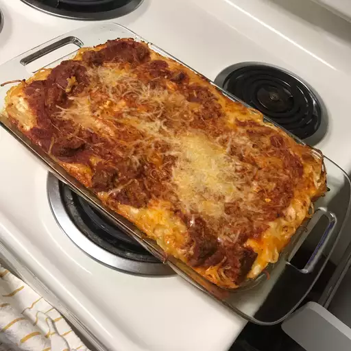

Baked Spaghetti

Description
Sushi rolls can be filled with any ingredients you choose.
Try smoked salmon instead of imitation crabmeat.
Serve with teriyaki sauce and wasabi.
This Sushi Roll recipe is too die for. I was really impressed.
It was AMAZING!!! honestly, if you haven't tried this recipe you have to it is the best.
It was really simple and easy instructions.
Ingridients
- Noodles: Of course, you'll need spaghetti noodles.
- Beef and onion: The meat sauce starts with a mixture of ground beef and diced onion.
- Sauce: A jar of meatless spaghetti sauce is the convenient secret ingredient. You can use homemade sauce if you want to go the extra mile.
- Salt: Seasoned salt enhances the overall flavor.
- Eggs: Eggs lend moisture and help hold the baked spaghetti together.
- Cheeses: You'll need Parmesan, mozzarella, and cottage cheeses.
- Butter: Melted butter gives the dish extra richness.
Steps
- Boil and drain the spaghetti.
- Cook the beef and onion together, then drain off the excess oil.
- Add the sauce and salt. Whisk the eggs, Parmesan, and butter in a separate bowl.
- Toss the spaghetti in the Parmesan mixture.
- Layer the ingredients in a prepared baking dish according to the detailed recipe.
- Cover and bake for 40 minutes. Sprinkle with mozzarella, then keep baking until the cheese is melted.